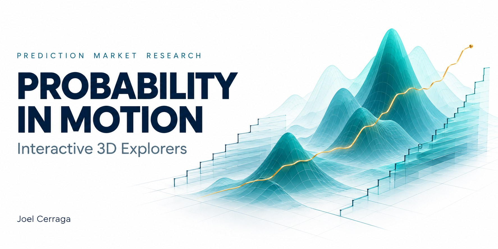
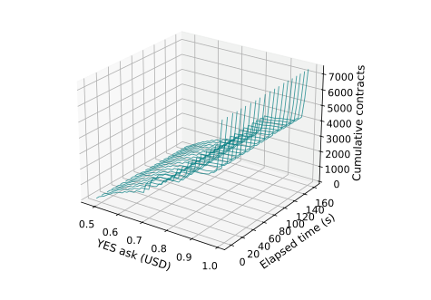
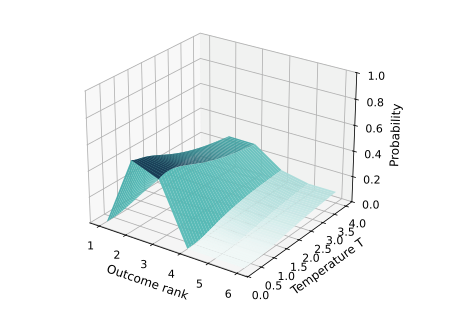
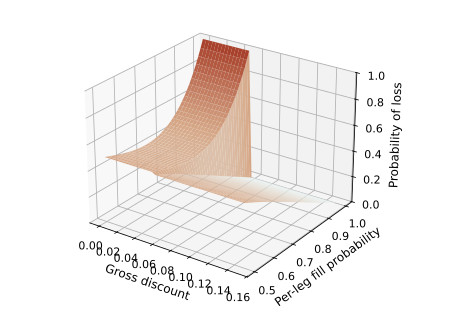

Three perspectives on prediction markets
Probability
in Motion
Explore how a quoted probability becomes an acquisition cost, and how execution changes the payoff.


Recorded observationsThe Liquidity Behind the Quote
Follow displayed ask-side depth through a short observation window, then compare the cost of different order sizes.

Observed vectors / model scenariosCalibrating the Market’s Odds
Change the temperature of a six-outcome probability vector and compare its shape with the market-derived baseline.

Synthetic mechanismWhen a Basket Fails to Fill
Vary the basket discount, number of legs and fill probability to explore how incomplete execution can create losses.
Start with liquidity to see what the quotes actually display. Use calibration to examine a model transformation. Then open the execution laboratory to separate a complete-basket payoff from partial-fill risk. Each page identifies the evidence and the assumptions behind its graph.